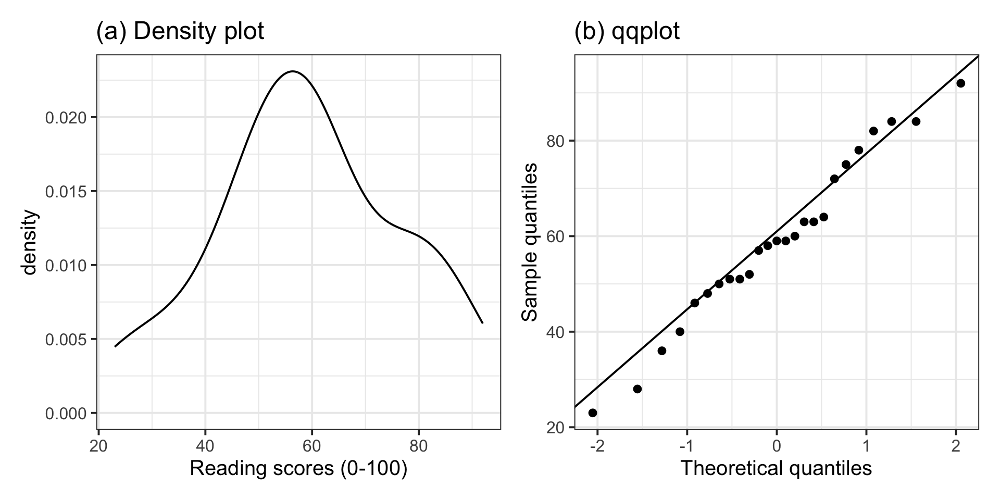

The sample data did not show violations of the assumptions required for the t-test results to be valid. Specifically, the data were collected on a random sample of students from Edinburgh University, hence independence was met. Figure 1(a) shows that the distribution of PASS scores is roughly bell-shaped, with a single mode and as such does not raise any concerns of violations of normality. Similarly, the QQ-plot in Figure 1(b) shows agreement between the sample and theoretical quantiles, as they almost all fall on the line. We also performed a Shapiro-Wilk test against the null hypothesis of normality of the population data: \(W = 0.94\), \(p = .20\). The sample data did not provide sufficient evidence at the 5% level to reject the null hypothesis that the population data follow a normal distribution.
Reading scores t-test example (assumptions and effect size)
# A tibble: 2 × 7
Variable M SD Min Med Max NMiss
<chr> <dbl> <dbl> <dbl> <dbl> <dbl> <int>
1 age -9.49 57.5 -99 24 32 0
2 read_score NA NA NA NA NA 10
Note
Question 3. What do you notice? Are there any issues with the data that need fixing? If yes, make appropriate changes to the data to fix those issues.
It looks like some students had their age stored as “-99”. This is an impossible value for age, and it was used by those entering the data as a missing value; i.e. when a student preferred to not disclose that information. The values “-99” should be replaced to be NAs.
The reading scores for some students were also missing but, if you look at the CSV file itself you will see that those were stored as spaces rather than -99s. This is in the CSV file, and not the object created into R when you read the CSV file data into R.
However, R is smart enough that when you read CSV data into R and there are spaces, those are interpreted as missing values and converted to NAs automatically.
Alternative 1:
students$age[students$age ==-99] <-NA
Alternative 2:
students <- students |>mutate(age =ifelse(age ==-99, NA, age) )head(students)
# A tibble: 6 × 2
age read_score
<dbl> <dbl>
1 28 84
2 NA 75
3 27 NA
4 29 NA
5 24 52
6 25 23
# A tibble: 2 × 7
Variable M SD Min Med Max NMiss
<chr> <dbl> <dbl> <dbl> <dbl> <dbl> <int>
1 age 26.3 3.82 19 26 32 10
2 read_score 59 17.6 23 59 92 10
Note
Question 4. We will only be using the reading scores. Remove from the data any rows for which the reading score is missing.
Alternative 1:
students_tidy <- students |>drop_na(read_score)head(students_tidy)
# A tibble: 6 × 2
age read_score
<dbl> <dbl>
1 28 84
2 NA 75
3 24 52
4 25 23
5 23 40
6 24 58
Alternative 2:
students_tidy <- students |>filter(complete.cases(read_score))
If you used na.omit(students) or drop_na(), you would remove students having NAs also for age. However, students may not have provided their age, but we can have their reading score, so if we were to do this, we would throw away available data!
Note
Question 5. At the 5% significance level, test whether the sample data provide significance evidence that the mean reading score for all students in that university is not equal to 50.
xbar <-mean(students_tidy$read_score)xbar
[1] 59
n <-nrow(students_tidy)n
[1] 25
s <-sd(students_tidy$read_score)s
[1] 17.6
se <- s /sqrt(n)se
[1] 3.51
Observed t-statistic
mu0 <-50tobs <- (xbar - mu0) / setobs
[1] 2.56
P-value = 2 * Probability to the right of tobs:
2*pt(abs(tobs), df = n -1, lower.tail =FALSE)
[1] 0.0172
The sample results are significant, so it’s good practice to follow up with a confidence interval
tstar <-qt(c(0.025, 0.975), df = n -1)tstar
[1] -2.06 2.06
ci <- xbar + tstar * seci
[1] 51.7 66.3
Note
Question 6. The t-test for one population mean relies on some assumptions for the results to be valid. Check whether these are satisfied or not in this sample.
The data come from a random sample of students from that university, hence the independence assumption is satisfied.
The sample size - that is, the number of data points that are not missing - is \(n = 25\). This is not a large enough sample size for the sample mean to be normally distributed, so we will check whether the sample came from a population that follows a normal distribution. If this is the case, then the sample mean would be normally distributed irrespectively of the sample size.
plt1 <-ggplot(students_tidy, aes(x = read_score)) +geom_density() +labs(x ="Reading scores (0-100)", title ="(a) Density plot")plt2 <-ggplot(students_tidy, aes(sample = read_score)) +geom_qq() +geom_qq_line() +labs(x ="Theoretical quantiles", y ="Sample quantiles", title ="(b) qqplot")plt1 | plt2

Figure 1: Distribution of reading scores
The density plot highlights a roughly bell-shaped distribution with a single peak near 60. The qqplot doesn’t highlight any severe departures from normality, in fact the sample quantiles follow the theoretical quantiles from a normal distribution pretty closely.
Alternatively, you can also obtain the qqplot as follows:
Shapiro-Wilk normality test
data: students_tidy$read_score
W = 1, p-value = 0.8
Note
Question 7. Provide a write up pf your results in the context of the study.
Data were obtained from https://uoepsy.github.io/data/students_reading_scores.csv. The dataset contains measurements on age and reading scores for 35 randomly sampled students from a hypothetical university. Due to random sampling of the students, the independence assumption is satisfied. Some students had missing values for their reading scores, so those students were dropped from the analysis, leaving a sample of 25 students for the analysis. A Shapiro-Wilk normality test was performed at the 5% significance level (\(W = 0.98, p = 0.84\)). The sample data do not provide sufficient evidence to reject the null hypothesis of normality of the population data. Furthermore, the density plot shown in Figure 1(a) highlights a roughly bell-shaped distribution, and the qqplot in Figure 1(b) doesn’t show violations from normality.
At the 5% significance level, we performed a hypothesis test against the null hypothesis that the mean reading score of all students in that university was equal to 50. The sample data provide very strong evidence to reject the null hypothesis in favour of the alternative one that the population mean reading score is different from 50: \(t(24) = 2.56, p = 0.02\), two-sided.
We are 95% confident that the mean reading score for all students in that university is between 52 and 66.
Note
Question 8. Is there a significant effect? Is the effect important?
Yes, there is a significant effect, as we found a p-value smaller than the significance level of 5%. However, this is no guarantee that the effect is of practical importance.
To judge whether the effect is important, we need to compute the effect size, i.e. Cohen’s D:
D <- (xbar - mu0) / sD
[1] 0.512
Cohen’s D highlights a medium effect size, highlighting that the sample result is not only significant, but perhaps also of moderate importance and worth noting.